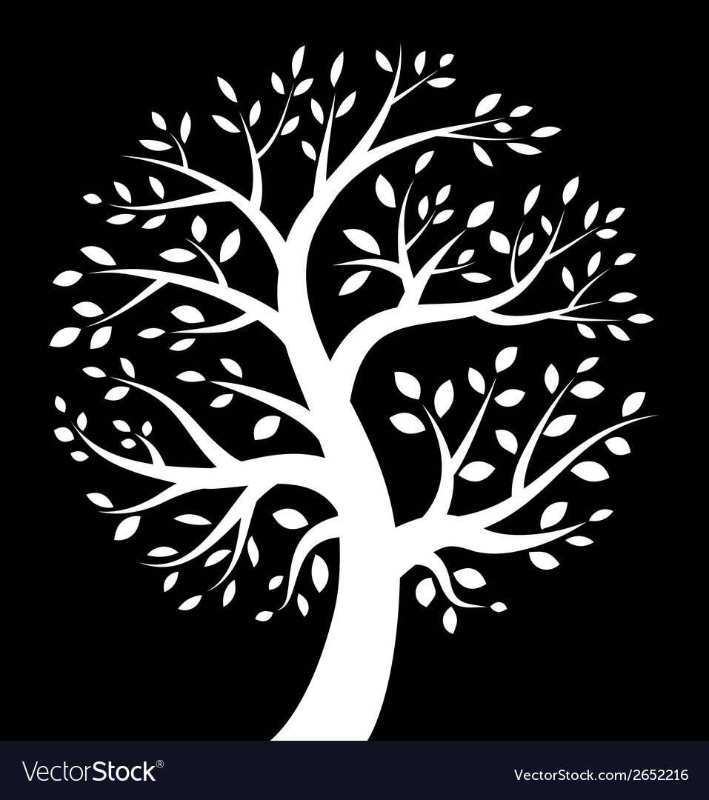

earthlybe the Change!HOMESHOPABOUTCONTACT US👤🛒
ESSENTIALS
Sustainability Starter Kit
Reusable Bamboo Straws
€ 10.99
€ 1.99
Natural Bamboo Loofah
Bamboo Toothbrush (set 2)
€ 2.99
€ 3.59
Plant Based Reuseable Cups
Plant Based Reuseable Containers
€ 2.39
€ 1.99
EARTHLY IS PLANT-BASED AND MADE FROM:
BAMBOO AND WHEAT FIBRE
Sourced from local farmers, plant residue from Wheat, Barley, and Bamboo is molded into durable cups using our proprietary technology.
ORANGE FIBRE
Made from Orange peels and other organic matter left behind after Orange is harvested.
Govt. Certified
Microwave Safe
100% Recyclable
Dishwasher Safe
About earthly
It’s high time for all of us to think about our impression and capacity to lessen the waste and its impacts on the climate. This must be finished by settling on a responsible choice of utilizing eco-friendly products. Earthly Eco-friendly products like bamboo toothbrushes, bamboo straws, plant-based coffee cups, and many sustainable products are items that are not unsafe to the climate. These are items produced using sustainable and organic raw materials. Earthly products are of the best quality and in the best designs. What’s more, it’s shockingly easy to roll out sure improvements to your way of life just by sorting out where to begin. Rather than utilizing a plastic cup, trade it for eco-friendly cups and eco-friendly containers. Earthly organic products are the most affordable option in the market. The other alternatives are expensive and lack quality.
Enter Earthly, a spot for businesses that need to be a part of the green movement. We do an amazing job to give you the information and alternative sustainable products for your cafes and food business. Earthly has a fair trade policy for all business deals. You have the right to place orders for sustainable products that go with your budget and business. We’re endeavoring to set new principles, increase present expectations, and review what is useful for your business and our planet. Each move you make as a business is a chance to be better. When you shop at Earthly, you add to a superior future for every one of us. So now you know a superior method to shop sustainable products, and join the development beneath! We offer a variety of biodegradable options like biodegradable cups, biodegradable containers, organic toothbrushes and many more to choose from.
C O N T A C T U S
REACH US
16 Liffey Ave, Liffey Valley Park, Lucan, Co. Dublin, K78 HW50, Ireland